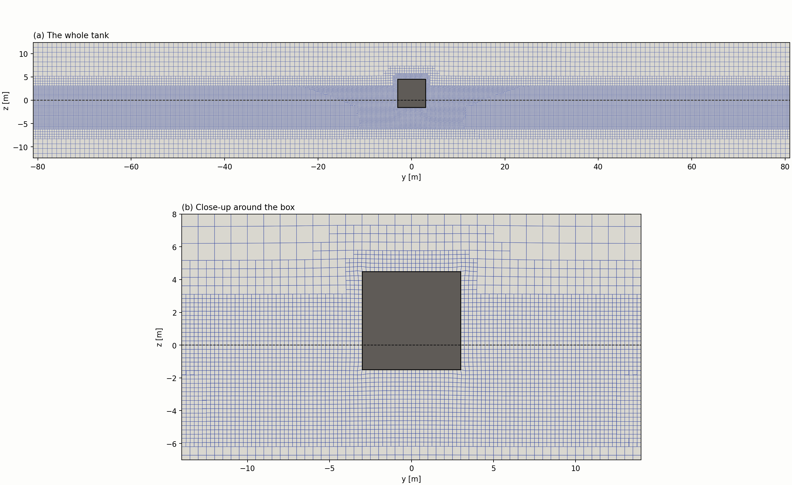
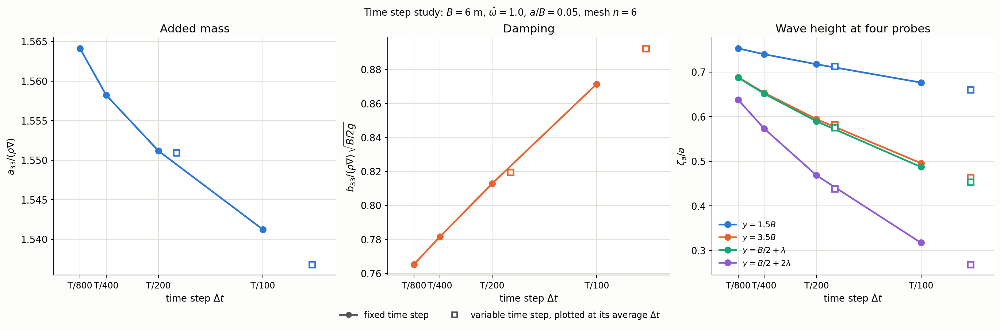

Time step convergence study
B = 6 m, ω̂ = 1.0. How small must the time step be before the answer stops changing?
The requirements
Each requirement has a section further down the page that explains how we answered it. The sections follow the report. Sections marked coming are built step by step as we go through the assignment, and the link becomes active when the section is built.
| Requirement | Status | Short answer | Where we explain it |
|---|---|---|---|
| Select one of the cases | Done | B = 6 m, ω̂ = 1.0 | Section 1 |
| Generate at least 4 time-steps. Consider both fixed time-step and variable time-step with courant number | Done | Four fixed time steps (T/100 to T/800) and two runs with a Courant limit (0.25 and 0.5) | Section 2 |
| Produce convergence plots / compare the results. Consider grid size and time step size in terms generated wave period and length | Done | Figure and table of the values against the time step, with Δt given as a fraction of the period | Section 3 |
| The outcome of the sensitivity studies might have consequences on the choices in the main part. Each student is assigned a sensitivity study to perform and share the results in the group | Partly | The time step is used in the main study. Sharing with the group is not done. | Section 4coming |
Section 1: Select one of the cases built
Status: Done
The assignment says to select one of the cases. We use the case with B = 6 m and ω̂ = 1.0 (Table 1).
| Quantity | Value |
|---|---|
| Box | B = 6 m, D = 1.5 m (B/D = 4), H = 6 m (H/B = 1), L = 18 m (L = 3B) |
| Motion | Heave |
| Frequency | ω̂ = 1.0, T = 3.47 s, λ = 18.8 m |
| Amplitude | a/B = 0.05 (a = 0.3 m) |
| Mesh | n = 6: fine cells B/(4n) = 0.25 m, about 75 fine cells per λ |
| Tank | 162 m long (78 m = 4.15λ from the box edge to each end wall), depth 12.4 m (0.66λ) |
| Ramp and length | Ramp 3T, simulation 10T = 34.7 s |
| Time step | Varied in this study (Section 2 and 3) |
Table 1. The case used in the time step study.
How the values were found
Period T and wave length λ. From ω̂ = ω√(B/2g) we get
Draught, height, box length and amplitude. D = B/(B/D) = 6/4 = 1.5 m, H = (H/B) B = 6 m, L = 3B = 18 m (scaled from the template, where the box is 15 m long for B = 5 m) and a = (a/B) B = 0.05 · 6 = 0.3 m.
Tank. Four wave lengths of water on each side of the box, rounded up to a whole number of box widths so that the background cells of size B/n fit exactly:
From the box edge to each end wall the distance is (162 − 6)/2 = 78 m = 4.15λ (Figure 1).
Depth. The depth follows the template. Waves behave as deep water waves when the depth is larger than about half a wave length, so the depth is taken as λ/2 plus twice the draught:
Mesh. The mesh has n = 6 coarse cells per box width, so the fine cells have size B/(4n) = 6/24 = 0.25 m. This gives 4nλ/B = 24 · 18.8 / 6 ≈ 75 fine cells per wave length (Figure 2). We use n = 6 as a compromise between accuracy and run time. In the mesh study (B = 8 m) n = 6 differs from n = 8 by 0.5 % in the added mass, 2.6 % in the damping and 1 to 3 % in the waves, and n = 8 takes about 1.7 times longer. Based on the runs we had, n = 6 appeared to be a sensible mesh, and it most likely captures the main behaviour of the system. The mesh study shows that the results still change somewhat when n increases, so it is not a converged mesh.

Ramp. The motion is ramped up over 3T, which means that the amplitude grows gradually (with a cosine shape) from zero to its full value. Without a ramp the box would go from rest to full speed in no time, and the acceleration in the first step would be very large. The value 3T is the default in the template.
Length. The simulation runs for 10T = 34.7 s, including the ramp. The length is set so that the waves reach the farthest probe and there are periods left with full amplitude to average over:
The travel time is the distance to the farthest probe divided by the group velocity of the waves, which is the speed of the wave energy:
For deep water the dispersion relation is ω² = gk. Differentiating gives 2ω dω = g dk, so
The phase speed is c = ω/k = g/ω, so cg = c/2. For this case
and the travel time to the farthest probe (40.6 m) is
Section 2: Fixed and variable time steps built
Generate at least 4 time-steps. Consider both fixed time-step and variable time-step with courant number
Status: Done
We run the same case with four fixed time steps, each half the size of the previous one (Table 2). The time step is given as Δt = T/N, where N is the number of steps per period. The time steps are compared with the Courant number, which is the number of cells the fluid moves in one time step:
where U is the fluid velocity and Δx is the cell size. “Maximum Co” is the largest value in any cell during the simulation.
| Δt | Steps per period | Δt [s] | Steps in total | Maximum Co | Run time |
|---|---|---|---|---|---|
| T/100 | 100 | 0.0347 | 1000 | 0.68 | 59 min |
| T/200 | 200 | 0.0174 | 2000 | 0.34 | 1 h 42 min |
| T/400 | 400 | 0.0087 | 4000 | 0.19 | 2 h 49 min |
| T/800 | 800 | 0.0043 | 8000 | 0.10 | 4 h 50 min |
Table 2. The four fixed time steps. The simulation lasts 10T = 34.7 s. The run times are wall clock times with several cases running at the same time.
For the variable time step OpenFOAM chooses Δt in every step so that the maximum Courant number stays below a limit, maxCo. The Courant number depends on the velocity, so OpenFOAM makes Δt small when the velocities are large and large when they are small. We run two cases, with maxCo = 0.25 and 0.5, both starting from T/400 (Table 3).
| maxCo | Average Δt [s] | Equivalent fixed step (average) | Steps in total | Maximum Co reached | Run time |
|---|---|---|---|---|---|
| 0.25 | 0.0204 | T/170 | 1704 | 0.32 | 1 h 29 min |
| 0.5 | 0.0429 | T/81 | 809 | 0.66 | 49 min |
Table 3. The two runs with a variable time step. The average Δt is the simulated time divided by the number of steps.
The Courant number is a stability limit and does not say how large the time error is. The number of steps per period is not fixed, and Δt can become large when the velocities are low.
Section 3: Convergence plots built
Produce convergence plots / compare the results
Status: Done
The figure shows the added mass, the damping and the wave height for the four fixed time steps (Figure 3) and the values are in Table 4. The x axis is the time step, so the limit of a very small time step is at the left edge. The squares are the variable time step runs, placed at their average Δt. The dashed line is a straight line through the two finest steps, continued to Δt = 0.

| Δt | A33* | B33* | ζa/a at 1.5B | at 3.5B | at B/2 + λ | at B/2 + 2λ |
|---|---|---|---|---|---|---|
| T/100 | 1.541 | 0.872 | 0.676 | 0.496 | 0.487 | 0.318 |
| T/200 | 1.551 | 0.813 | 0.717 | 0.594 | 0.590 | 0.469 |
| T/400 | 1.558 | 0.782 | 0.740 | 0.654 | 0.651 | 0.573 |
| T/800 | 1.564 | 0.765 | 0.753 | 0.688 | 0.688 | 0.638 |
| Extrapolated (Δt → 0) | 1.570 | 0.749 | 0.766 | 0.723 | 0.724 | 0.703 |
| Variable, maxCo 0.25 (T/170) | 1.551 | 0.819 | 0.713 | 0.582 | 0.576 | 0.439 |
| Variable, maxCo 0.5 (T/81) | 1.537 | 0.892 | 0.660 | 0.464 | 0.454 | 0.269 |
Table 4. The results for the time step study.
What it shows.
- A33* changes by less than 2 % over the whole range.
- B33* and the waves depend much more on the time step. When Δt is divided by 8, B33* falls by 12 % and the wave at B/2 + 2λ doubles (0.318 to 0.638).
- B33* follows a straight line in Δt. The changes are 0.059, 0.031 and 0.016, which halve each time, as for a scheme that is first order in time (Euler). The extrapolated value is 0.749, and T/800 is 2 % above it.
- The waves do not halve their changes (0.151, 0.104 and 0.065 at B/2 + 2λ; they shrink by a factor of about 1.5). The straight line value 0.70 is therefore probably too low, and the wave at B/2 + 2λ is still more than 9 % below the limit at T/800.
- The variable time step runs lie close to the fixed time step curves when they are plotted at their average Δt. A Courant limit gives about the same accuracy as a fixed Δt of the same average size.
The probes in these runs are at 1.5B, 3.5B, B/2 + λ and B/2 + 2λ. The probes at 2.5B and 5.5B are only in the main study.
Section 4: Use of the result and sharing not built yet
The outcome of the sensitivity studies might have consequences on the choices in the main part. Each student is assigned a sensitivity study to perform and share the results in the group
Status: Partly
Not built yet. We build this section when we go through this requirement.
What we have so far: the time step T/800 is used in the main study. Sharing the result with the group and marking the source is not done.